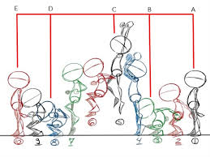
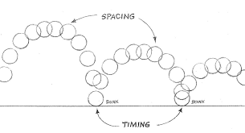
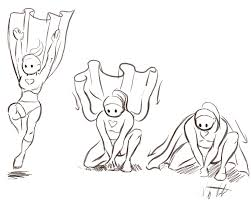
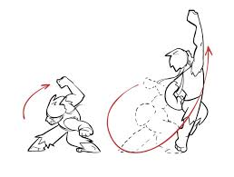

Fundamentals
As said before, animation is extremely varied, which makes it extremely hard to define techniques that work for all of its mediums. Fortunately, Ollie Johnston and Frank Thomas have already found techniques that could be applied to any animation medium. These techniques, also known as the “principles” or “fundamentals” of animation, are extremely important in conveying life-like and readable movement. For organization, I will categorize these techniques into 3 main sections: structuring, believability, and readability, though some of the fundamentals can cross into multiple sections. It is also important to know that some animation styles tend to focus less on some of these techniques than others. I will still list all the fundamentals first:
- Straight Ahead & Pose-to-Pose
- Space and timing
- Exaggeration
- Arcs
- Easing
- Appeal (won't talk about)
- Staging
- Secondary Action
- Follow-Through
- Squash and Stretch
- Anticipation
- Solid Drawing (also won't talk about)
Structuring
The structure, or basic layout, of an animation is helpful for planning scenes. Knowing how to structure an animation first before detailing is essential for perfecting movements and poses. For example, you could spot mistakes ahead of time and fix them, or you could separate physics based movement with something more rigid and plannable despite being in the same scene.
Straight Ahead
This method of planning involves drawing frame after frame with no guidelines whatsoever. Although this method is poor for planned out actions, it is great for spontaneous and unpredictable movements.
Any complicated physics movement is hard to plan out due to the many variables to keep in mind. If what you are animating is unpredictable, then you simply just draw frame after frame based on what you know.
Pose to Pose
This method involves planning out actions by drawing the key poses first. Although it isn’t great for unpredictability, it is great for actions that need careful planning.
In order to do pose to pose, you first mark down the key poses, which mark the starting and final positions of whatever you are animating. You then fill in the extremes, which mark the furthest and most anticipated poses. Breakdowns connect these extremes, and finally, you inbetween to clarify easing.
Timing
The most common FPS is 24 FPS. In order to save time, many methods were made such as stretching out frames. Drawing a frame out of the 24 for every second is called drawing on ones. Holding a drawing for two frames out of the 24 for every second is called drawing on twos, and so on. 24 can be evenly divided into 2, 3, and 4, which makes it the perfect number while still being seen as clean.
Slower actions appear better when drawn on twos since when on ones, it is much harder to inbetween a tiny small distance. Faster actions tend to be on ones in order to make the action seen and more clear. Camera movements should also be on ones to avoid jitteriness.
Spacing
The further or closer apart you put the drawings with each other affects the movement. If there is only one frame in between two poses, it would make the action appear extremely fast. If you put multiple frames in between two poses, it would make the action appear slower.
Readability
The readability of an animation is how clear it is to understand what you are looking at. Can you process the action? Can you understand what a scene is trying to convey? Having good readability keeps a viewer engaged, and if readability is bad, it will most likely have the viewer lost and confused.
Anticipation
Without property anticipation, viewers can miss an action, which might leave them confused. If an action must be seen, it should be anticipated clearly before the action takes place. This can be done wind up or another action that sets up the main action. The greater the anticipation, the more powerful the main action will feel.
Anticipation can also increase believability. When someone is about to do an action, they typically do a smaller action for preparation.
Staging
Staging involves making the presentation of a scene very clear. If staged right, the mood you are trying to convey or the main action you are animating should be obvious. If staged poorly, viewers could miss the scene’s entire point or miss an important action, which could cause confusion.
The eye can only handle so many things at once. If multiple things are competing for presence in a scene, the viewer might miss what you want to show. You should take time establishing an action first before moving on to another action.
Another way to stage is by camera work. The focus of the scene should be clear and not to the side. You can make sure the viewer sees the focus by putting the main action near the center of the screen.
Secondary Action
Secondary action is the idea of having another action to further emphasize the first action. Secondary action must not block the primary action, it should be used to amplify it. For example, if the primary action is someone walking, there are multiple secondary actions that can be paired with a walk to make an emotion clear. If you make the person walking hold a fist, they will appear mad. If they are hunched over, they will appear sad.
Staging is very important when making secondary action. If you want to amplify an emotion, you should make the secondary action go before or after the primary action so both actions don’t go unnoticed.
Exaggeration
Exaggeration is meant to convey what you are trying to show clearly. It should not distort what you are animating, but instead, make it more convincing. Too little exaggeration can make the viewer miss what you are trying to show.
Believability
Objects need to feel natural when they move. Bad believability can make an animation feel less impactful, which in turn can make it feel more boring. Animation gets its immersion removed if actions don't feel grounded in reality. Even though some animations look exaggerated, they are still grounded in real world principles.
Squash and Stretch
Despite squash and stretch not being too prevalent in real life, it can help create more dynamic movement along with emphasizing speed and stiffness. The faster the object is, the more it will stretch when moving and the more it will squash when it impacts something. The stiffer the object is, the less it will squash and stretch overall. This technique can also be paired with anticipation to further exaggerate an action.
It is important to keep the volume of the object consistent throughout, since if you don’t, it would appear as if the object is growing or shrinking.
Follow Through & Overlapping Action
Follow through is the idea that different parts, like appendages, will drag with an offset after an object moves. This occurs when something surrounding the main object isn’t rigid, such as limbs or clothing. Once the object comes to a complete stop, it is put in a hold state, and everything else will follow through during this state.
The amount of drag given to something can change the appearance of its mass. The less it bends, the stiffer it seems and vice versa.
Easing
Objects in real life don’t typically move with any acceleration. To achieve the effect of acceleration, you want to spread out the drawings the more time passes. This will make the object travel a bigger distance the more time there is, thus, making it accelerate.
It is also important to note when to ease. If an object’s momentum suddenly shifts, let's say it hits the ground, it would not accelerate before this occurs.
Here are some examples of easing (hover over the boxes):
Arcs
Arcs are essential to making animations more realistic. If you want inbetween two poses, most of the time an arc is used. This is because rotations typically don’t travel linearly, but instead move like it's tracing a circle.
Arcs, when paired with a follow through, can make a character stopping seem more realistic. When someone intentionally does a sudden stop after maintaining a huge acceleration, they sort of appear to move kind of like a spring. This is because the body needs to absorb the impact to not break any bones or cause damage.
